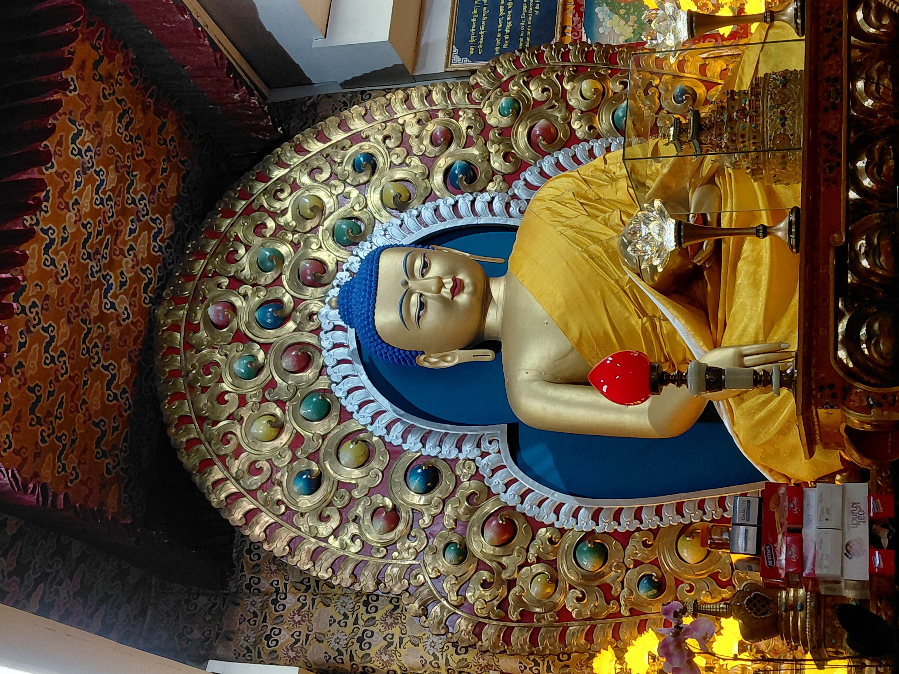

LOADING
A field-study exploring temples, monasteries, manuscripts, traditional medicine,
and living cultural heritage across Mandi, Dharamshala & Rewalsar
An academic field study on preserving the living cultural memory of the Himalayan region
Dr. Harsh Soni
School of Physical science — IIT MandiShivani Mam
IIT MandiIIT Mandi
ISTP Programme — Academic Year 2025–26Three distinct yet deeply interconnected sacred landscapes of Himachal Pradesh

The seat of the Tibetan Government-in-Exile and home of the Dalai Lama, McLeodganj is one of the most vibrant repositories of Tibetan Buddhist culture outside Tibet. Our team engaged with monks, Amchi doctors, and community leaders, documenting Sowa-Rigpa, life-cycle rituals, and manuscript traditions at Men-Tsee-Khang.
A multi-modal qualitative and observational research approach across three field sites
Reviewed existing scholarship on Himachali temple traditions, Tibetan manuscript culture, Sowa-Rigpa, and oral heritage preservation. Consulted ASI reports, cultural studies, and government heritage documents.
Developed an 8-section structured fieldwork questionnaire covering folk culture, ritual practices, manuscript preservation, archiving methods, and modern challenges — deployed across all three field sites.
Documented 8+ temples including Panchvaktra, Trilokinath, Bhootnath, Tarna Devi, Neelkanth Mahadev, Bhimakali, khua Rani, and Shambhu Ghat. Interviewed temple priests, local historians, and ASI officials.
Visited monasteries in McLeodganj and Men-Tsee-Khang. Interviewed monks (Tenzin, Tsering, Choekyi), Amchi doctors, and cultural guides. Documented Sowa-Rigpa, life-cycle rituals, and monastic education.
Visited Tso Pema (Lotus Lake). Documented the syncretic heritage of Buddhist monasteries, Hindu shrines, and Sikh Gurudwara. Recorded oral accounts of the Padmasambhava–Mandarava legend and observed living pilgrimage practices across faith traditions.
Transcribed interviews, coded field notes thematically across all three sites, compiled documentation, and synthesized findings into structured recommendations for digital archiving and policy advocacy.
Eight centuries of devotion, architecture, and living ritual tradition on the banks of the Vipasha
Living traditions documented through community interviews in McLeodganj
Amchis (traditional Tibetan doctors) diagnose patients through pulse examination on both wrists, identifying internal organ conditions and energy imbalances. Urine analysis—based on color, odor, and bubble formation—is also used as a key diagnostic tool rooted in ancient Sowa-Rigpa texts.
Several high-altitude plants are widely used: Bichu Butti (Nettle) for diabetes and blood pressure, Buransh (Rhododendron) for fever and liver health, Devdar decoctions for joint pain and recovery, and Barberry (Daru-Haldi) for wound healing. Triphala (Haritaki, Bibhitaki, Amalaki) supports digestion.
Unique Himalayan ecology supports rare species like Gucchi (Morels), a highly valued mushroom growing under pine trees. Certain plants bloom once in 14 years, tied to local legends. Bana (Nirgundi) is used for sprains and joint pain through steam or paste application.
Medicines are derived from herbs, minerals, and sometimes purified metals. Mani Rilbu are sacred pills blessed by Gurus, while Shindeem is used for respiratory issues. Simple remedies like ginger water with honey are used for common illnesses.
Healing integrates spirituality through invocation of the Medicine Buddha (Bhaisajyaguru). Doctors emphasize compassion and lifestyle correction, believing many illnesses arise from improper diet and habits rather than just physical causes.
The Men-Tsee-Khang Institute in Dharamshala is the central hub of Sowa-Rigpa medicine. It combines traditional knowledge with modern relevance, treating chronic conditions like arthritis, digestive disorders, and stress-related illnesses.
The Lotus Lake — our third field site, where Hindu, Buddhist & Sikh traditions converge in sacred legend
Rewalsar serves as the profound culmination of our three-site journey — where the temple legends of Mandi (Kuan Rani), the Tibetan Buddhist traditions of Dharamshala, and the syncretic sacred landscape all converge in one living pilgrimage site.
Thematic synthesis from field interviews, direct observation, and community interaction across Mandi, Dharamshala & Rewalsar
The most urgent finding across all three sites is the rapid erosion of oral knowledge systems. Traditional priests, Amchis, and elders hold complex ritual knowledge, medical formulations, and mythological narratives that are not systematically recorded. As senior knowledge-holders pass away without successors, entire bodies of living knowledge disappear irreversibly. Younger generations, increasingly urban and digitally connected, show limited interest in traditional apprenticeship.
All three field sites demonstrate remarkable inter-religious synergy. The Kuan Rani Temple in Mandi (Site 1) and Rewalsar Lake (Site 3) are both sacred to Tibetan Buddhists and Hindus, directly linked through the Mandarava–Padmasambhava legend. The Trilokinath Temple synthesizes Shaivism and Vaishnavism. Rewalsar additionally includes a Sikh Gurudwara — making it a unique three-faith convergence point requiring cross-community archiving approaches.
Traditional Tibetan medicine (Sowa-Rigpa) practiced at Men-Tsee-Khang (Site 2) remains the primary healthcare preference for chronic conditions. However, knowledge of high-altitude herb identification, collection seasonality, and purification of mineral ingredients is concentrated among a small number of trained Amchis. The medicinal herb supply chain from the Himalayan highlands is increasingly disrupted by climate change and restricted collection access.
While ASI protection has helped conserve major temples like Panchvaktra and Trilokinath, a significant number of smaller shrines and rural village temples remain unprotected and unmapped. Earthquake damage (two of five subsidiary shrines at Trilokinath were destroyed) and neglect continue to erode architectural heritage. The intricate Meenakari work at Tarna Devi Temple and the Tankari script inscriptions at Trilokinath require specialized conservation urgently.
Our third field visit to Rewalsar (Tso Pema) revealed a uniquely resilient form of cultural heritage — the shared pilgrimage tradition. Despite modernization pressures, Buddhists, Hindus, and Sikhs continue to co-exist and perform their respective rituals at the lake. The sacred carp-feeding ritual and circumambulation of the lake by multiple faith traditions represent a form of intangible heritage that is self-sustaining but needs formal documentation before demographic shifts alter its character.
A clear generational divide exists across all three sites. In the Tibetan community, elders follow Guru's guidance with deep faith while modern-educated youth approach traditions analytically and selectively. In Mandi, young people participate in Shivratri but have limited knowledge of iconographic traditions. The Dalai Lama's encouragement of analytical engagement is helping bridge this gap — but structural transmission mechanisms are increasingly difficult to sustain in urban contexts.
Structured interview guide deployed across all three field sites — Mandi, Dharamshala & Rewalsar
Structured field observations compiled from temple visits, monastery interviews, and the Rewalsar pilgrimage site
| Temple | Year Built | Architectural Style | Primary Deity | ASI Protected | Unique Feature |
|---|---|---|---|---|---|
| Panchvaktra Mahadev | 16th Century CE | Shikhara | Panchmukhi Shiva | Yes (1980s) | Five-faced Shivalinga; Ardhanarishvara sculpture |
| Trilokinath | 1520 CE | Shikhara | Three-faced Shiva | Yes | Tankari script inscription; Jeev Pratishtha ritual |
| Bhootnath | 1527 CE | Nagara / Shikhara | Shivalinga | Partial | International Shivratri Festival epicenter |
| Tarna Devi | 17th Century CE | Hilltop Shrine | Shyama Kali / Tara | No | Meenakari ceiling; victory monument significance |
| Neelkanth Mahadev | Medieval Era | Shikhara (East-facing) | Neelkanth Shiva | No | Royal stepwell "Pehru Ri Baay"; "Jaichu Naun" tank |
| Bhimakali | 1660–1666 CE | Hilltop Mound Shrine | Goddess Bhimakali (Pindi) | No | Miraculous river retrieval legend; Kuldevi temple |
| Mata Kuan Rani | Traditional | Slate-roofed well shrine | Princess Mandarava | No | Sacred to both Buddhists & Hindus; linked to Rewalsar (Site 3) |
| Shambhu Ghat | Traditional | Open-air Ghat | Shivalinga (natural) | No | Ritual bathing site on sacred Beas River |
Table I: Summary of temple field observations at Mandi (Site Visit 1). ASI = Archaeological Survey of India.
| Practice / Domain | Site | Specific Element | Status | Transmission Risk |
|---|---|---|---|---|
| Traditional Medicine (Sowa-Rigpa) | Site 2 | Mani Rilbu, Shindeem, Pulse Diagnosis, Herbal Remedies | Active — Men-Tsee-Khang | Medium |
| Life Cycle — Naming & Marriage | Site 2 | Guru-given name; 3-day marriage; Pangden; Lama presiding | Partially modified | Medium |
| Death & 49-Day Rituals | Site 2 | 49-day prayers; Sattu offering; soul-body 3-day belief | Active | Low |
| Monastic Education | Site 2 | Prayer schedule; Buddhist philosophy + modern subjects | Active | Low |
| Temple Traditions & Ritual | Site 1 | Daily puja; Shivratri Festival; Panchamrit bathing rituals | Active | Medium |
| Protection Rituals & Mantras | Site 2 | Kala Tika, Tunga amulet, Green Tara & Medicine Buddha mantras | Partially practiced | Medium-High |
| Inter-faith Pilgrimage | Site 3 | Buddhist circumambulation; Hindu rituals; Sikh prayers; sacred carp-feeding | Active | Medium |
| Oral Legend Traditions | Sites 1 & 3 | Mandarava–Padmasambhava legend; Kuan Rani (Site 1) & Rewalsar (Site 3) | Partially documented | Medium-High |
| Sacred Floating Islands & Carp | Site 3 | Floating reed islands; sacred carp; lake circumambulation by all faiths | Active | Medium |
| Tibetan Festivals | Site 2 | Losar, Monlam Puja, Saga Dawa, Gaden Ngamchoe | Active | Low |
Table II: Cultural practices and heritage observations across all three field sites. Site 1 = Mandi, Site 2 = Dharamshala/McLeodganj, Site 3 = Rewalsar. Transmission Risk: Low = practiced across generations; Medium = declining youth participation; Medium-High = primarily older generation.
Actionable pathways for preserving the living cultural heritage of Mandi, Dharamshala & Rewalsar
Establish a centralized, open-access digital repository for Himachali and Tibetan cultural heritage following international standards. IIT Mandi, in collaboration with Men-Tsee-Khang, ASI, and the Rewalsar monastery council, is ideally positioned to lead this initiative spanning all three sites.
Launch a systematic oral history documentation program targeting temple priests (Site 1), Amchis and monks (Site 2), and pilgrimage guides and faith community leaders (Site 3). Prioritize recording the Mandarava legend traditions linking Mandi and Rewalsar.
Formalize MoUs between IIT Mandi, Men-Tsee-Khang, the HP State Museum, monastery libraries, and the inter-faith trust at Rewalsar. Annual ISTP student documentation cycles across all three sites would ensure continuity of archiving efforts.
Establish dedicated conservation labs for the physical stabilization and digitization of manuscripts — particularly the Tankari-script inscriptions at Trilokinath (Site 1), Tibetan Buddhist texts at McLeodganj (Site 2), and oral legend documentation at Rewalsar (Site 3).
Advocate for extending ASI protection to currently unprotected sites including Bhimakali Temple, Tarna Devi Temple, the Neelkanth stepwell complex (all Site 1), and the lakeside heritage structures at Rewalsar (Site 3). Develop a comprehensive heritage mapping survey of Mandi's 81+ temples.
Design community-level cultural education workshops drawing on the syncretic model demonstrated at Rewalsar — where Buddhist, Hindu, and Sikh traditions co-exist. Use the three-site narrative (Mandi → Dharamshala → Rewalsar) as an educational framework connecting distinct but interlinked heritage streams.
The cultural heritage of Himachal Pradesh — spanning the Shaiva temple traditions of Mandi (Site Visit 1), the Tibetan Buddhist practices of Dharamshala and McLeodganj (Site Visit 2), and the profound inter-faith sacred landscape of Rewalsar (Site Visit 3) — represents a convergence of civilizational knowledge streams of immeasurable depth and continuing vitality.
Our three-site field study traced a remarkable cultural arc: from the stone inscriptions of Trilokinath and the five-faced Shiva of Panchvaktra Temple in Mandi, to the morning prayers and Sowa-Rigpa healing traditions of McLeodganj's monasteries, to the sacred lotus lake of Rewalsar where the legend of Princess Mandarava — first encountered at the Kuan Rani Temple in Mandi — finds its miraculous culmination. These three sites form an interconnected sacred geography that has shaped human life, devotion, and knowledge in this Himalayan landscape for over five hundred years.
"Culture is not a relic of the past to be stored in a museum — it is a living conversation between generations. What we archive today, we gift to the future."
— Field Reflection, ISTP Cultural Heritage Project, IIT Mandi 2025-26 · Mandi · Dharamshala · RewalsarThis heritage faces a critical inflection point. The generation that carries this knowledge in embodied, living form is aging, while the structural mechanisms for transmission are under sustained pressure from modernization and displacement. The window for systematic archiving across all three sites is narrowing, and urgent, collaborative, cross-community action is required. We hope this report serves as both a document of record and a call to sustained, collaborative action.